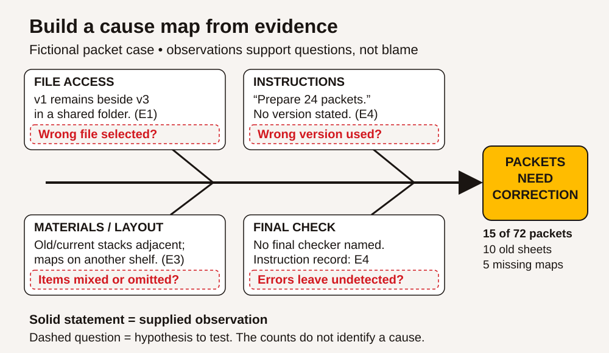

Visual index — ACCESS IS4S
Preview eight illustrated pages · Learner book · Practitioner guide
The visual edition contains 38 SVG assets and four fictional illustrations. SVGs carry the exact teaching information; selected illustrations provide human context. Each linked SVG opens separately for inspection or editing.
Four examples



Editable SVG library


Context illustrations
| Scene | Image |
|---|---|
| Four fictional Indigenous adults compare a drawing, notebook and tablet outside a BC community learning centre, with a mountain landscape and a separated closed training road beyond. | Open image |
| Two fictional Indigenous adults compare revised notices and a paper timetable in a community learning centre. | Open image |
| An adult writer revises a paper draft beside a laptop while another adult reader gives feedback. | Open image |
| Two fictional Indigenous adults measure a small practice board and check a calculator in a BC training room. | Open image |


The asset notes record design provenance, original source reuse and editing instructions. The visual audit explains what changed from the first edition. The validation record reports print and browser checks.